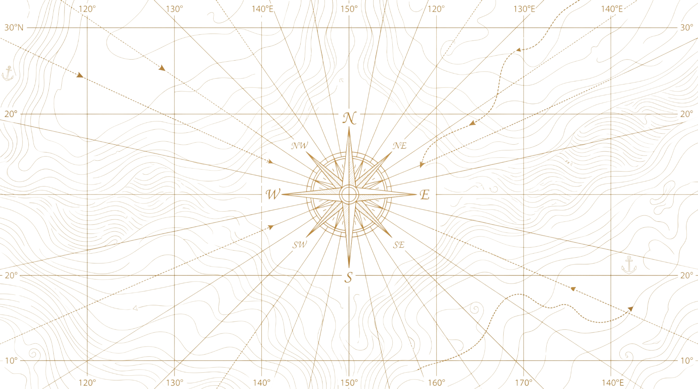

Explore diferentes perspectivas para aprofundar sua análise.
Carregando suas reflexões…
Como você se sentirá em relação a cada opção daqui a 10 minutos, 10 meses e 10 anos?
Como você se sentiria logo após escolher esse caminho?
O que poderia mudar na sua rotina nos próximos meses?
Como essa escolha poderia se conectar à vida que você deseja?
Não há resposta certa. Registre suas próprias expectativas; você pode salvar e continuar depois.
0 de 6 reflexões preenchidas
As seis reflexões serão salvas e esta técnica será marcada como concluída. Isso não encerra sua decisão. Enquanto ela estiver em andamento, você poderá revisar as respostas e concluir a técnica novamente.
Ative o JavaScript para carregar e salvar suas reflexões.